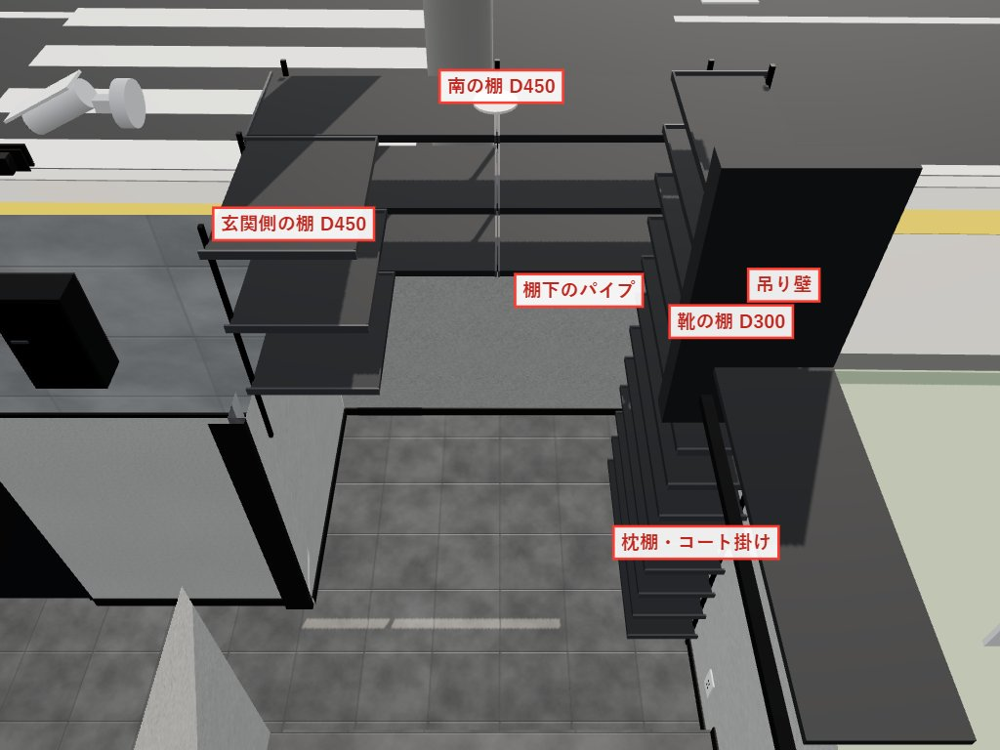
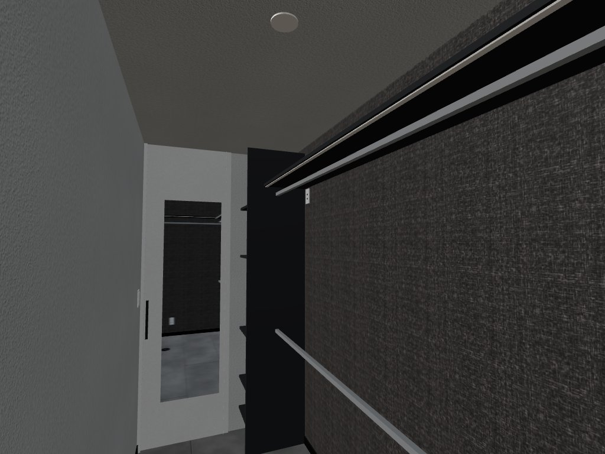
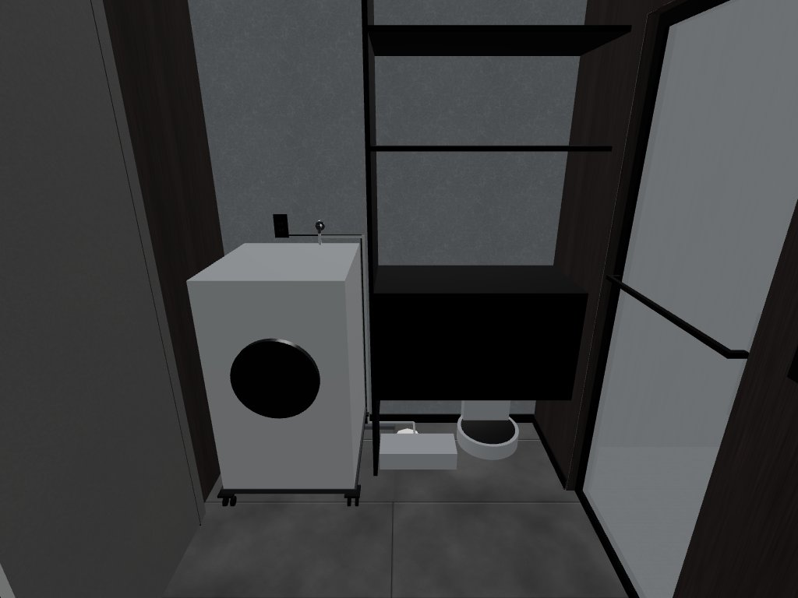
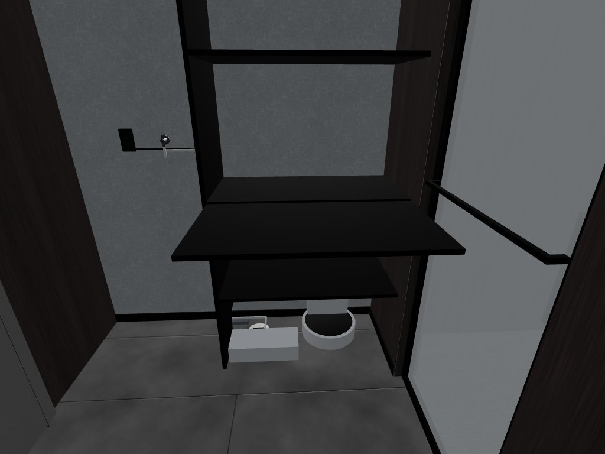
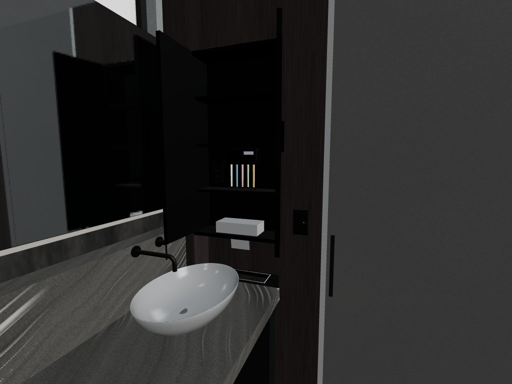
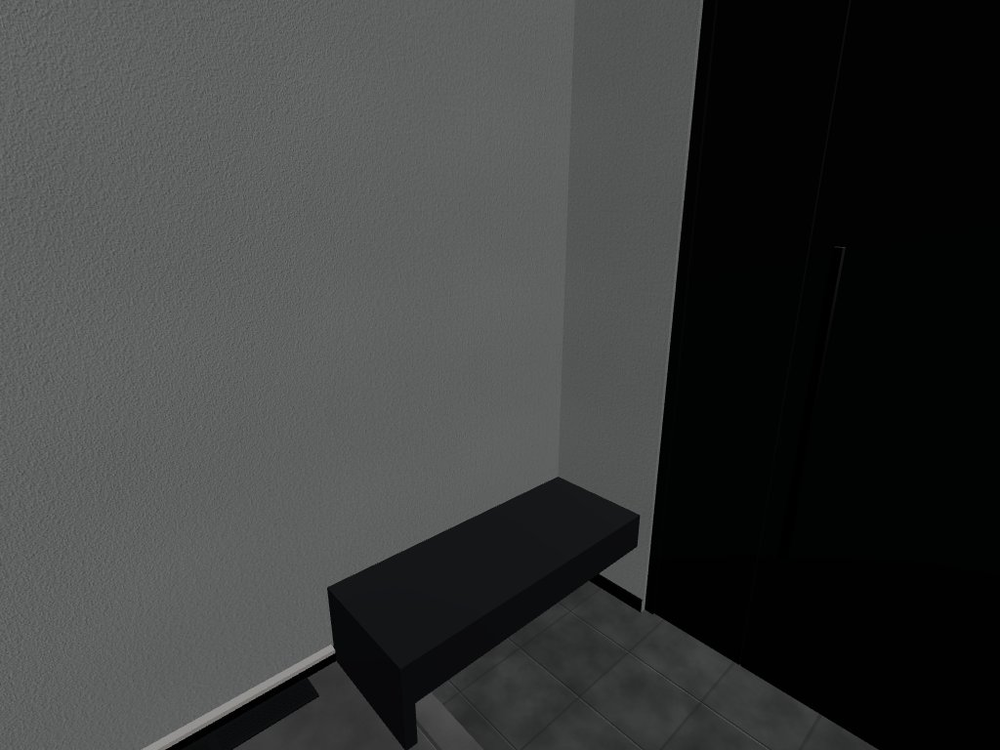
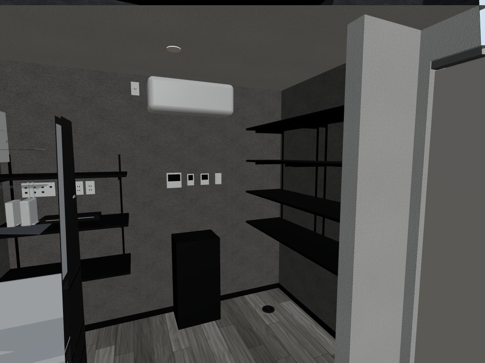
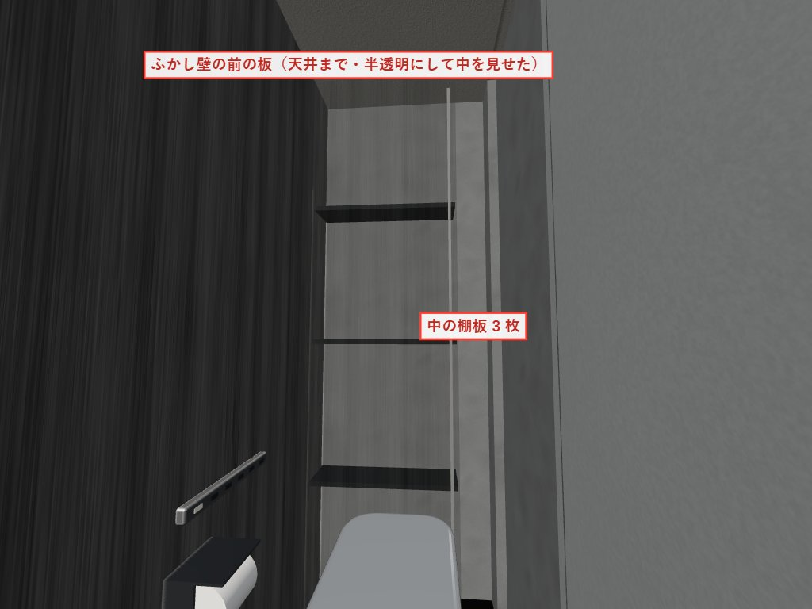
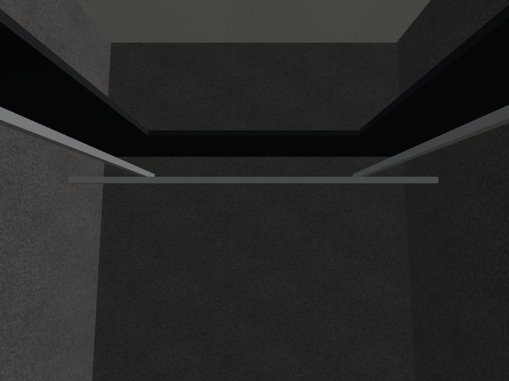

2026-11-06 時点の 3D シミュレーターから作成。ワンダーハウスさんへの説明用。寸法は mm、FL は各階の床から、x は西の外壁の芯から東へ、y は北の外壁の芯から南へ（施工図の通り芯 い〜・1〜 の 910 の倍数）。クロスの貼り分けは別紙「クロス貼り分け表」。
あとで物を付けるので、石膏ボードの裏に合板などの下地を入れてほしい所。範囲は付ける物の大きさに上下左右 100 ずつ足した目安（棚は棚柱が付く範囲）。図の赤い線が下地の範囲、番号は表の番号。自分で付けるかもしれない造作棚の場所はまだ決まっていない。
| 番号 | 部屋 | 面 | 付ける物 | 下地の範囲（mm） | 付ける人 |
|---|---|---|---|---|---|
| 1 | 玄関 | 西の壁 | 玄関のアート（450×600） | y 4610〜5020・FL+930〜1730 | 施主 |
| 2 | 玄関 | 西の壁 | アートの上のブラケット（beaubelle bbw-009） | y 4610〜4920・FL+1750〜2230 | WH（施主支給） |
| 3 | 洗面室 | 北の壁 | ミニ洗面台の丸ミラー（直径 500） | x 260〜810・FL+1050〜1750 | 施主 |
| 4 | 洗面室 | 東の壁 | タオルフック | y 3080〜3330・FL+1000〜1260 | 施主 |
| 5 | シューズクローク | 南の壁 | 樹脂棚板 D450 の棚柱（南の棚・幅 1700 を 2 分割） | x 60〜1760・FL+860〜1940 | WH |
| 6 | シューズクローク | 東の壁 | 樹脂棚板 D450 の棚柱（玄関側の棚） | y 5600〜6420・FL+860〜1940 | WH |
| 7 | シューズクローク | 西の壁 | 樹脂棚板 D300 の棚柱（靴の棚・土間から天井近くまで 12 段） | y 5280〜6420・FL−150〜2170 | WH |
| 8 | シューズクローク | 西の壁 | 枕棚の受け（北西・FL+1800） | y 4380〜5290・FL+1650〜1900 | WH |
| 9 | シューズクローク | 北の壁 | コート掛けのハンガーパイプの受け（中心 FL+1700・西の壁から 300） | x 250〜470・FL+1600〜1800 | WH |
| 番号 | 部屋 | 面 | 付ける物 | 下地の範囲（mm） | 付ける人 |
|---|---|---|---|---|---|
| 10 | パントリー（納戸） | 北の壁 | パントリーの可動棚の棚柱（北の壁） | x 5520〜6550・FL+500〜1700 | 要相談 |
| 11 | パントリー（納戸） | 東の壁 | パントリーの可動棚の棚柱（東の壁） | y 60〜900・FL+700〜2100 | 要相談 |
| 12 | パントリー（納戸） | 東の壁 | パントリーの可動棚の棚柱（東の壁） | y 700〜1530・FL+700〜2100 | 要相談 |
| 13 | トイレ | 西の壁 | トイレットペーパーホルダー | y 3310〜3660・FL+550〜860 | WH |
| 番号 | 部屋 | 面 | 付ける物 | 下地の範囲（mm） | 付ける人 |
|---|---|---|---|---|---|
| 14 | 書斎（北東） | 南の壁 | 南の壁の貼り分けの所 全部（ふかし壁 FL+555〜1740・上下の木の板。ベース・ギターのハンガーもここに付ける） | x 5520〜8130・FL+490〜1810 | 施主（ハンガー） |
| 15 | 書斎（南西） | 南の壁 | リュックのフック | x 3000〜3250・FL+1050〜1310 | 施主 |
| 16 | トイレ（天井が下がる所） | 北の壁 | トイレットペーパーホルダー（HOLDIN air-to-14・ダブル） | x 2230〜2890・FL+550〜900 | 施主 |
3D シミュレーターの画面（服や小物は消して撮った。シューズクロークは壁を低く切って上から、パントリーは手前の壁を消して、トイレの収納は前の板を半透明にして中が見えるようにした）。寸法は今の 3D の値。高さは各階の床から。

| 南の棚 | 樹脂棚板 D450（南海プライウッド アームハング棚柱SS・ダークグレー・エンドキャップ付き）。幅 1,700 を 2 分割（850 ずつ）・3 段（棚板の上面 FL+1250・1545・1840） |
|---|---|
| 棚下のハンガーパイプ | 南の棚の西半分、一番下の棚板の下に吊る（中心 FL+1140）。傘・フロアモップを掛ける。ランバーシリーズの上吊ハンガーパイプのような形（品番は未定） |
| 玄関側の棚 | 樹脂棚板 D450・東の壁・幅 615・3 段（棚板の上面 FL+1250・1545・1840）。一番下の段の下にゴルフバッグ 2 つ |
| 靴の棚 | 樹脂棚板 D300・西の壁・幅 930 の 1 枚の板。土間から天井近くまで 185 ごとに 12 段（一番下の棚板は土間から 185 上げて掃除しやすく） |
| コート掛け | ハンガーパイプ（北西・南北に長さ 900・西の壁から 300・中心 FL+1700） |
| 枕棚 | 西の壁・奥行 300・長さ 900・下面 FL+1800（パイプの中心から 100 上） |
| 吊り壁 | 枕棚とパイプの南の端に天井から下げる（幅 400・厚さ 80・下端 FL+1600・枕棚と同じ色） |
商品名（南海プライウッドなど）と吊り壁は仮。この形にできれば、作り方・商品は問わない。樹脂棚板の製品の奥行は 240・290 なので、D450 は実物と合わせて確認したい。

| 仕切り板 | 入口側（x 4950）・奥行 480・高さ 2,350（クローゼットの造作壁） |
|---|---|
| 可動棚 D270 | 仕切り板にレール・幅 480・6 段（棚板の上面 FL+250・500・900・1500・1900、6 段目は上に棚板なし） |
| 枕棚 | 北の壁: 奥行 350・仕切り板から東の壁まで（長さ 約 2,940）・FL+2050。東の壁: 奥行 350・長さ 895・FL+2050 |
| ハンガーパイプ | 上: 仕切り板から東の壁まで・中心 FL+1980。下: 東の壁まで・中心 FL+900。東: 北の壁から南の壁まで・中心 FL+1930（上のパイプと交わるので 50 下げる） |
棚・枕棚・仕切り板の色はダークグレー。


| 大きさ | 幅 950・奥行 450・天井まで。浴室側（西）は縦の板なしで壁に付け、洗濯機側（東）だけ側板。棚・扉は黒 |
|---|---|
| 東の側板 | 床から天井まで。奥の下の角を幅 180・高さ 180 くらい切り欠き、洗濯機の排水ホース・S10 の給水ホース・電源コードを通す |
| 下の段（床〜FL+450） | 扉なし・底板なし（床がそのまま続く）。排水口と、その手前に S10 の水交換ステーション、浴室側の壁から離してゴミ収集ステーション |
| 洗濯かごの段（FL+470〜970） | 扉は 1 枚で上に跳ね上げて開く。90° で止まるステーを付け、開けたまま一時的に物を置けるようにしたい |
| 上の段 | 洗濯かごの段の上の板（FL+970）・棚板（FL+1570・1970）。前は突っ張り式のロールスクリーンで隠す |
下の段に置く SwitchBot S10 の水交換ステーション・ゴミ収集ステーションは施主が用意する。

| 大きさ | 東の壁に埋め込み・幅 500・奥行 160・高さ 2,050（北の壁から 150 離す、y 210〜710）。前面は壁の仕上げ面にそろえる |
|---|---|
| 下（ニッチ） | 薄型のゴミ箱を置くニッチ（奥と両側は TH34190）。カウンターの高さ（FL+850）に四角い投入口の棚 |
| 上（収納） | 黒い扉の収納（両開き・ミラーと反対の側に吊る）。棚板 3 枚、一番下の段の真ん中に逆さのティッシュ（底板の穴から引き出す） |
| 扉 | 鏡側（北）の扉は鏡に当たらないよう開き角度制限付きの丁番で 90°、反対側は 105° |
| 中のコンセント | 歯ブラシ除菌器を置く段の奥の壁（中心 FL+1420 くらい） |

| フロートベンチ | 東の壁沿い・長さ 約 1,150・奥行 450・厚さ 150（座面 FL+300）。ホールの床に立つ L 字の板の脚で、土間の上へ張り出す。ダークグレー |
|---|

| 北の壁 | 西の端からエアコンのコンセントの手前まで（幅 930）・奥行 450・棚柱 2 本・棚板 3 枚（上面 FL+700・1100・1500、2・3 枚目は仮） |
|---|---|
| 東の壁 | 板を横に 2 枚（各 幅 約 740）・奥行 450・棚柱 4 本・棚板 4 枚（上面 FL+900・1250・1600・1950、2 枚目から上は仮） |
棚板はすべて黒。誰が作るか（WH か施主か）は相談したい。

| 大きさ | 便器の後ろ（北の壁）・幅 640・奥行 約 200・天井まで。前面はクロス TH34191 |
|---|---|
| 中 | 空洞で、東の 150 のすき間から出し入れ。棚板 3 枚（FL+600・1200・1800・奥行 180） |
| 照明・配線 | 前の板の裏に縦の間接照明（東の端から 30 あける）。下に配線の穴 |

| 北・南の壁 | 枕棚（奥行 350・西の壁から東の壁まで 約 1,470・FL+1800）とハンガーパイプ（中心 FL+1700） |
|---|---|
| 奥（東）の壁 | 枕棚（奥行 350・長さ 約 770・FL+1800）とハンガーパイプ（北の壁から南の壁まで・中心 FL+1650。北・南のパイプと交わるので 50 下げる） |